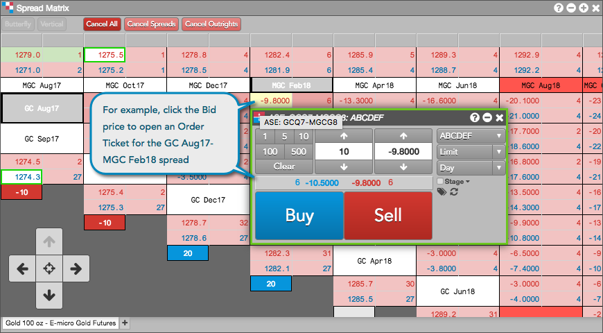
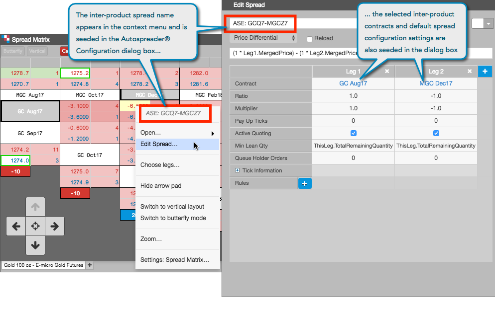

When you enter a spread order for an inter-product spread in Spread Matrix, Autospreader® automatically creates a synthetic instrument for the spread.
Left-click in a market data cell for a spread in the matrix to open your default floating order entry widget (MD Trader® or Order Ticket).

Tip: You can also right-click in a market data cell for a spread in the matrix, click Open... in the context menu, and select MD Trader® or Order Ticket.
Enter an order in MD Trader® or the Order Ticket for the spread.
After entering the order, Spread Matrix creates a synthetic inter-product spread instrument that can be managed and edited in the Autospreader® Manager.
Note: The synthetic inter-product spread also appears in the Autospreader tab in Spread Matrix.
Note: The Edit Spread... context menu option is only available when viewing an inter-product spread matrix.
The Autospreader® Configuration dialog opens seeded with the spread contract months that you selected. The inter-product spread name is created by the Autospreader® functionality in Spread Matrix:

Note: The Edit Spread... setting is only available for synthetic inter-product spreads or spreads created via the Custom tab in Spread Matrix.
Configure the spread settings if needed and click Save.
If desired, you can change the spread name to a user-defined name. After saving, the spread appears in the Autospreader® Manager.